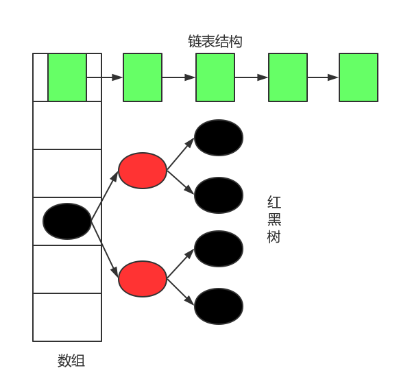

前言
为什么突然想到要“看看HashMap源码”？当然是因为爱学习！算了，不装13了。其实主要原因是，之前在学习高并发的时候，我们知道HashMap在高并发环境是不安全的，而且有可能使cpu瘫痪。看到这里，我已经很感兴趣了，这玩意还能瘫痪cpu啊。然后了解到的原因是在高并发环境下，HashMap的链表有可能成环，那么get()操作会死循环。为什么会成环呢？如何才能成环呢？抱着这个想法就想”看看HashMap源码”。但是，写到一半突然被告知jdk8已经修复了这个bug。
成员变量
进入Hashmap的源码(jdk1.8.0_91)，还是熟悉的配方熟悉的味道，那就是注释比代码多，这些注释就是我们学习源码的辅导资料。首先看看，Hashmap类的成员变量(没有列举全部，只是挑选了常用的)。
|
|
其实源码的注释已经介绍的很清楚了，这里只是重复。
table，一个存放节点(Node
size，Hashmap存放的键值对的数目，并不等于table数组的长度，因为可能存在链表和红黑树结构。
modCount，Hashmap的修改次数，是实现fail-fast机制的关键(关于fail-fast可以参考ConcurrentModificationException)。
DEFAULT_INITIAL_CAPACITY，表示默认HashMap数组初始大小为16，并且为了后续的rehash操作的方便，Hashmap的数组大小始终为2的整数次幂，即使你输入一个不是2的整数次幂的值，也会变成最小的大于该值的2的整数次幂。
MAXIMUM_CAPACITY，表示Hashmap数组的最大容量，初始值为2^30。
DEFAULT_LOAD_FACTOR，表示负载因子，当Hashmap的实际容量超过了(设定容量x负载因子)，就触发rehash操作，默认值为0.75。
TREEIFY_THRESHOLD，jkd1.8新增的，如果Hashmap数组元素的链表长度超过这个值，就使用红黑树结构代替链表提高查询效率，默认值为8。
在看看Hashmap的数组中存放的数据结构到底是如何定义的(截取部分源码)：
数组内的元素的数据结构继承了Map.Entry
在继续看Hashmap的内部方法之前，做个大致的总结：
Hashmap是用于存放键值对的容器，内部实现是基于数组的，数组中存放的是键值对Node节点，一个Node节点保存了一个键值对信息，同时还保存了next节点，可以形成链表结构(在发生hash冲突的时候)。如果链表长度太长，超过了阀值(默认为8)，那么就自动升级为红黑树结构(高效的平衡查找树)，这样一来，数组元素的节点就成为了红黑树的根节点了。
Hashmap的结构如图所示(同时显示了链表和红黑树)：

方法
主要介绍put(),get(),resize()，弄清楚Hashmap内部的工作流程即可。
put()
|
|
注释中说明了如果put()方法添加的键值对的键已经存在于Hashmap中，那么就用新的键值的值替代旧值。再看源码put()调用了hash()方法以及putVal()方法。我们先看hash()方法。
|
|
当输入的key为null时，hash值为0，也就是说Hashmap的key是可以为null的。对比HashTable，HashTable的key直接进行了hashCode，如果key为null时，会抛出异常，所以HashTable的key不可以是null。
具体如何得到key的hash值呢？首先调用key自身的hashcode()得到一个hash值h(32位int类型)，然后将h与h右移16位之后的数进行异或，得到最终的hash值。至于为什么这么做，这是前人总结出来的算法可以使得hash值分布更加均匀,尽量减少冲突。
再来看看putVal()方法：
|
|
通过注释，我们可以知道入参都代表了什么：
- hash：表示key的hash值
- key：待存储的key值
- value：待存储的value值
- onlyIfAbsent：是否需要替换相同的value值。如果为true，表示不替换已经存在的value
- evict：如果为false，表示数组是新增模式(暂时不知道啥意思,只在方法的最后出现,但不影响其他逻辑)
分解来看，上述方法都做了些什么。
首先判断当前HashMap的数组是否为空，如果为空，就调用resize()方法初始化一个长度为16的数组，并且获取到数组的长度n，代码如下：
|
|
然后，根据数组的长度n-1的值与入参key的hash值按位与运算，算出hash值对应于数组中的位置，从tab中将这个位置上面的内容取出，判断为null时，在这个位置新增一个Node。但是，如果取到了数据，也就是这个hash值对应数组的位置上面已经有了键值对存在。那么，就判断这个Node(原先数组中的Node)，也就是p的hash值是否与传入的hash相等，然后接着判断key是否相等(这里判断key是否相等，用了一个或运算)。如果判断通过，表示要传入的key-val键值对就是tab[i]位置上面的键值对，直接替换即可，不用管后面是链表还是红黑树。如果不是的话，就将这个新的键值对插入链表或者红黑树中即可。
插入键值对分两种情况：如果数组元素是链表时，就遍历链表进行插入等操作，同时找到链表的尾部，将节点新增到尾部。如果链表的长度大于等于红黑树化的阈值-1，就将链表转成红黑树。如果数组元素是红黑树的话，就直接插入键值对Node即可。代码如下：
|
|
最后，将修改次数加一，同时判断当前的键值对数量是否即将超过阈值，如果即将超过，需要进行resize()操作。
|
|
get()
介绍完put()方法，get()就相对容易理解了。还是看源码吧。
|
|
根据入参的key对象计算出key的hash值，调用getNode()方法，再来看看getNode()方法。
|
|
通过key的hash值与key对象，来查找key对应的键值对的值，如果查找失败则返回null。如何查找的呢？首先，通过key的hash值计算出对应数组的索引，如果索引到的第一个Node节点的key和hash值与入参相等，直接返回该Node。否则，循环遍历下一个节点(可能是链表也有可能是红黑树)。
resize()
在学习源码之前，先看看resize()方法的注释。resize()方法的注释写的很概括，基本介绍了该方法的作用与特点。
|
|
在resize的时候，数组容量还是要保持为2的整数次幂，所以扩容的时候容量会翻倍(原容量乘以2)，那么在resize的时候原来的元素在新数组中要不就维持原索引，要不就从原位置再移动2次幂，下文的源码中会有详解。
|
|
为了方便起见，一些简单的逻辑我直接就在源码中注释了。这里介绍Hashmap在resize()的时候，如何将原数组的元素复制到新数组中去的。注释中说到“the elements from each bin must either stay at same index, or move with a power of two offset in the new table.”也就是说，元素的位置要么是在原位置，要么是在原位置再移动2次幂的位置。如何实现的呢？
这里假设一种情况，原数组容量n为16，那么n-1的二进制码:0000 0000 0000 0000 0000 0000 0000 1111 。
hash(key1):1111 1111 0000 0000 1111 0000 1111 0101
hash(key1):1111 1111 0000 0000 1111 0000 1110 0101
由此可见，(hash(key1))&(n-1) = (hash(key2))&(n-1) = 0101 。说明，key1,key2在容量为16的数组中的索引位置相同，在同一个链表(红黑树)中。
现在，原数组容量翻倍n=32,n-1的二进制码:0000 0000 0000 0000 0000 0000 0001 1111 。
那么，(hash(key1))&(n-1) = 1 0101；(hash(key2))&(n-1) = 0 0101
所以，key2在新数组中的位置与原来保持一致，而key1的位置则是原来位置+16。
这样设计的好处在于我们在扩充HashMap的时候，不需要重新计算hash的值，只需要看看原来的hash值新增的那个二进制位是1还是0就好了，是0的话索引没变，是1的话索引变成“原索引+原数组容量”。这样不但省去了重新计算hash值的时间，而且由于新增的二进制位是0是1可以认为随机，也就把原数组中的hash冲突均匀的分散了。这也解释了为什么Hashmap的容量必须是2的整数次幂了。
总结
以上就是HashMap中比较重要的源码的简要分析，最后需要注意的是在高并发的情况下，还是尽量使用ConcurrentHashMap，因为Hashmap不是线程安全的，而Hashtable通过给整个map加锁的方式性能不好。